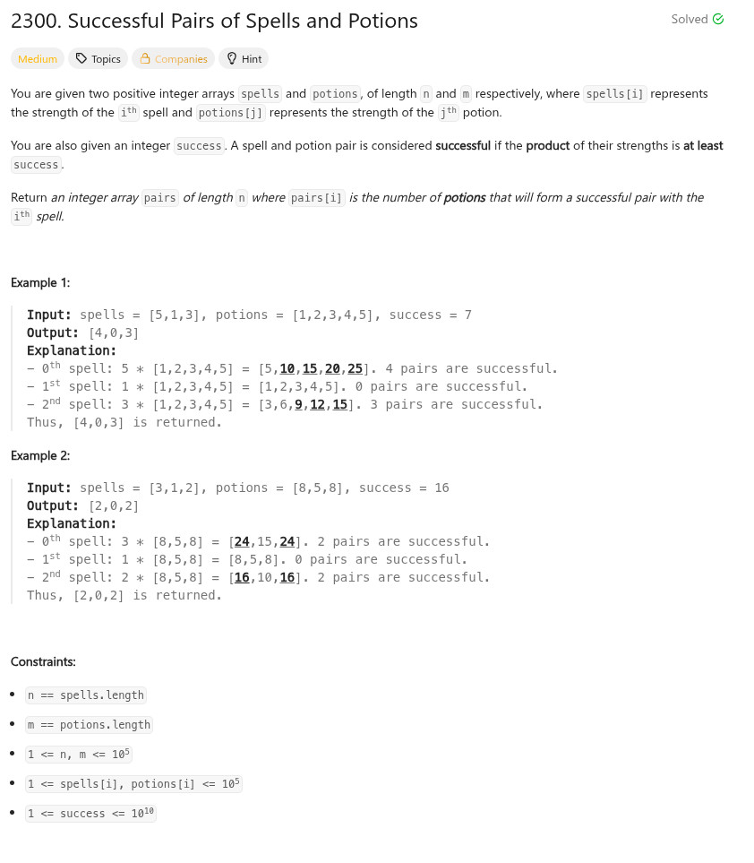

參考資訊：
https://www.cnblogs.com/cnoodle/p/17281951.html
題目：

int mysort(const void *a, const void *b)
{
return (*(int *)a) - (*(int *)b);
}
/**
* Note: The returned array must be malloced, assume caller calls free().
*/
int* successfulPairs(int *spells, int spellsSize, int *potions, int potionsSize, long long success, int *returnSize)
{
int c0 = 0;
int *r = malloc(sizeof(int) * spellsSize);
memset(r, 0, sizeof(int) * spellsSize);
qsort(potions, potionsSize, sizeof(int), mysort);
for (c0 = 0; c0 < spellsSize; c0++) {
int left = 0;
int right = potionsSize;
while (left < right) {
long long t = 0;
int m = left + ((right - left) >> 1);
t = (long long)spells[c0] * potions[m];
if (t < success) {
left = m + 1;
}
else {
right = m;
}
}
r[c0] = potionsSize - left;
}
*returnSize = spellsSize;
return r;
}